同一套示意数据和交互，五种风格。这一轮按外部评审意见重排了信息架构：先选资产，每种资产按"决定 → 改进 → 证明"三步看；计划能不能执行、哪些操作是排定的、哪些取决于价格、每个结论的范围，都放到第一屏。点截图或"打开原型"进入；原型底部的黑色切换条可以在五个方案之间切换，并停留在同一页。
方案截图都是 1440×900 屏幕的第一屏，其余截图从页面里裁出。所有数字都是示意，原型没有接模型。
| 评审的问题 | 核对结果和做法 |
|---|---|
| 调度说得太确定 | 部分对。正式模型里计划的 7.5 MW 晚间放电是排定的，每 30 分钟按最新价格重排；只有计划之外的富余电量从 A$150/MWh 起分层报价，价格到了才卖。页面按这个分两行写；条件部分不计入预计净值。出处见 README。 |
| 验证有 Fail，首页却给收益 | 那个 Fail 是原型占位数据，真实回测里正式配置没有违反接入上限；改成"0 次违反"，合同最大需量（CMD，按电费计价的经济限值）单独一行，只警告、不拦计划。另外把"结果是否最新"和"计划能否执行"分成两个状态；计划违反限值时首页显示"Plan blocked"，预计净值改标"Simulation only"（见下图，设置里把出口上限改成 3 MW 即可看到）。 |
| 两种商业模式混在一起 | 对。顶栏先选工厂电池或客户电池群，每种只显示自己的三个页面；设置放到齿轮后面。 |
| 验证对商业结论支持不够 | 对。收益页的结论下面写明：历史模拟、样本内、假设情景、运行 R‑0142、还没有样本外检验；7 天的未看过测试期显示"区间包含 0"。 |
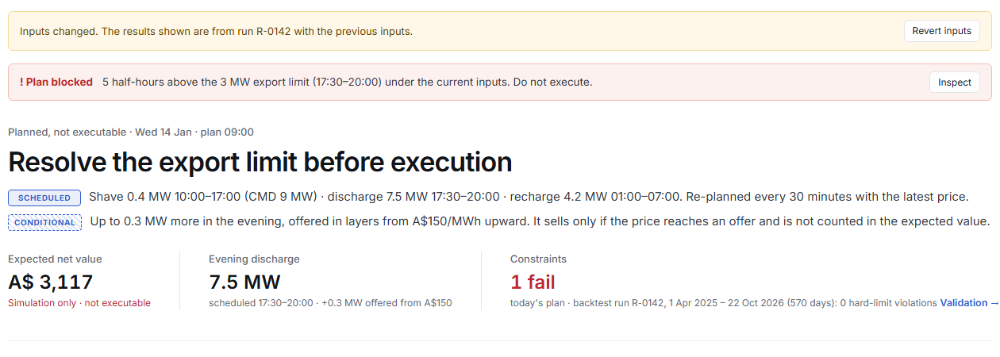
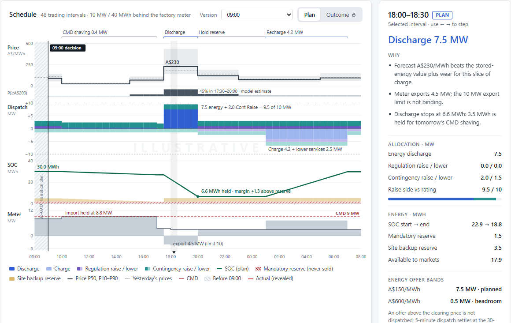
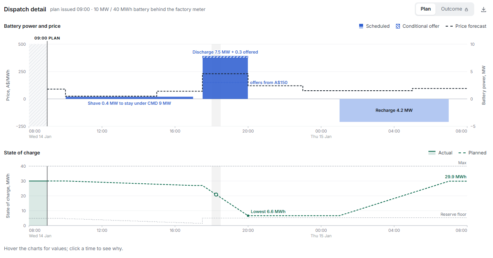
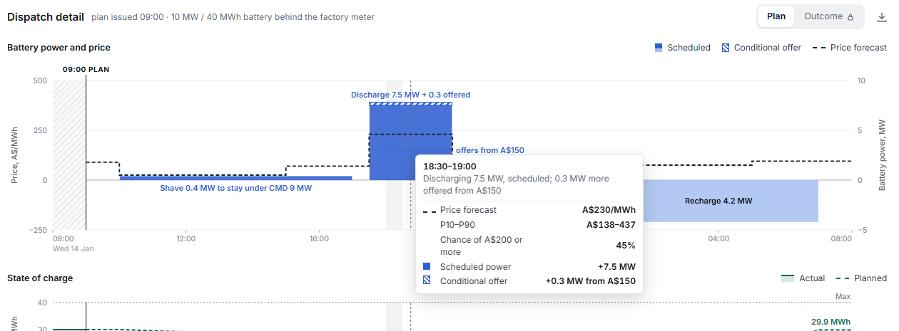
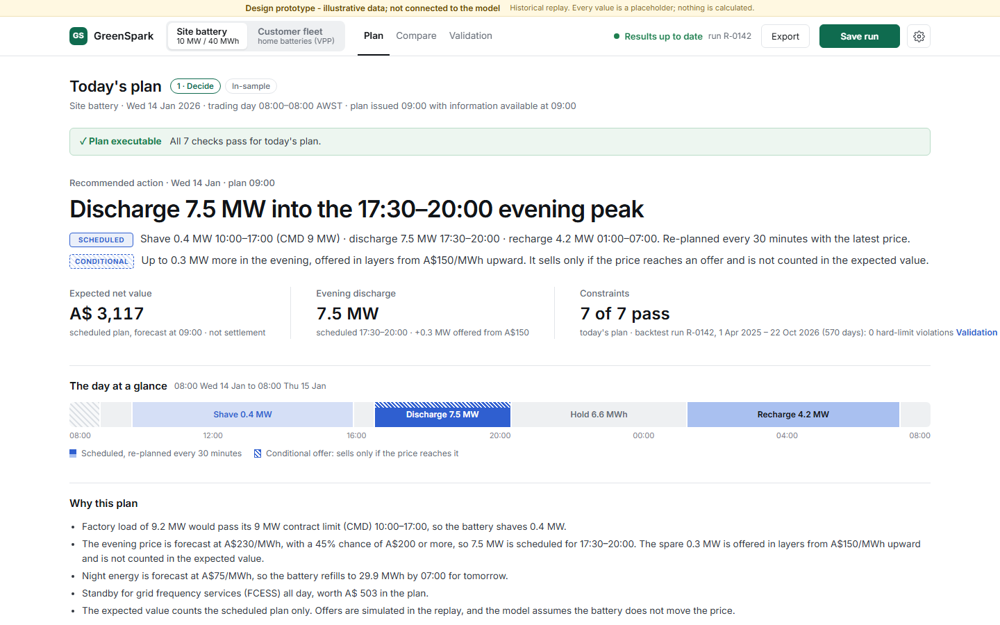
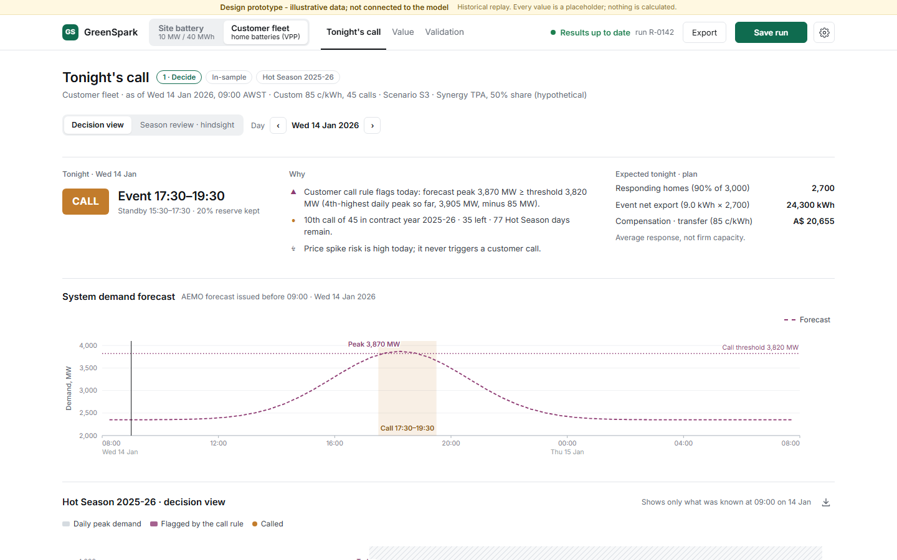
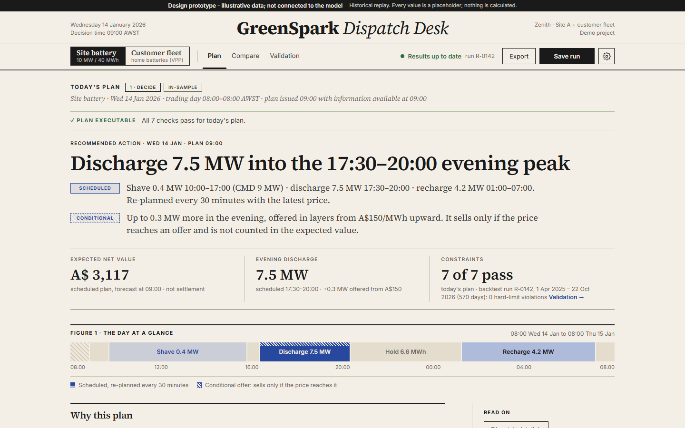
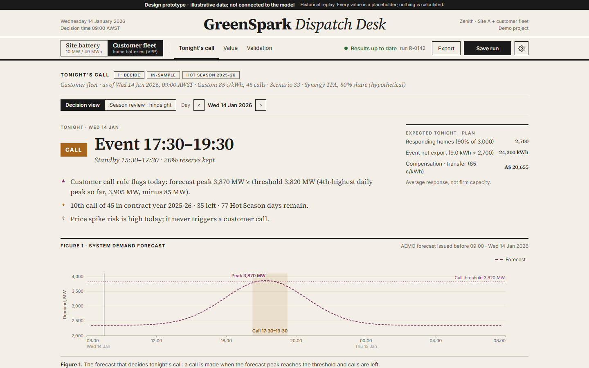
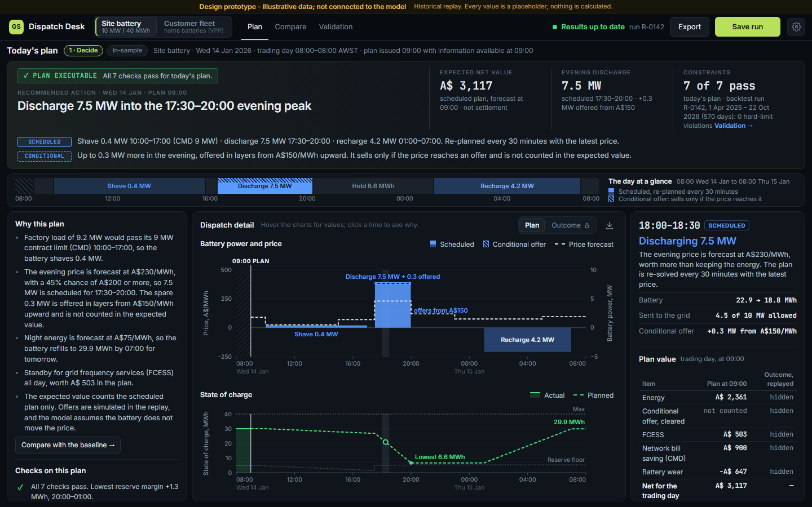
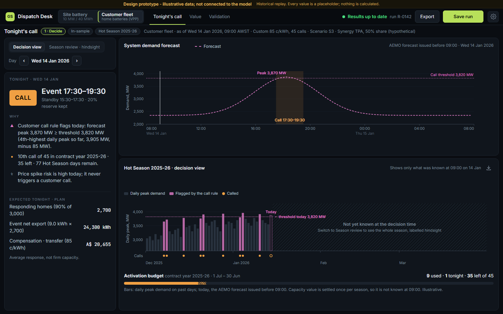
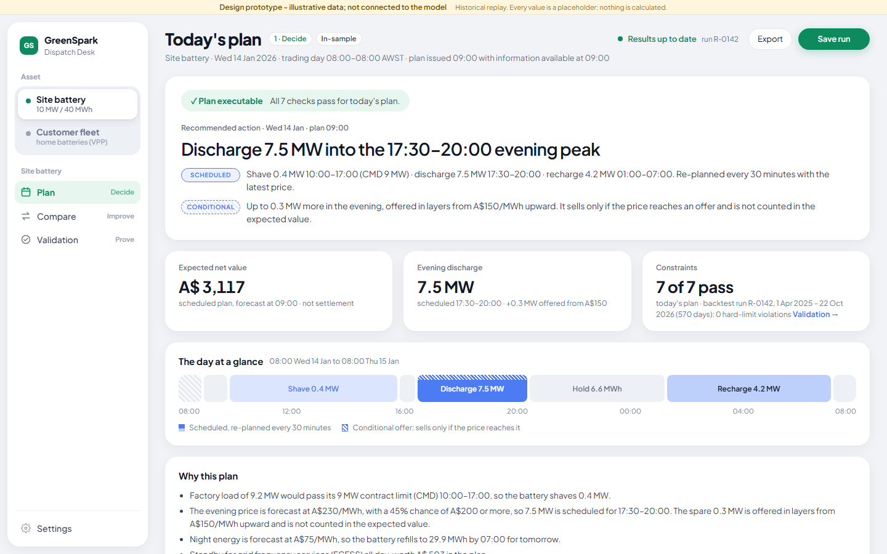
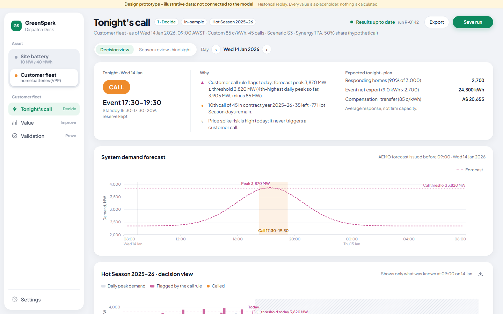
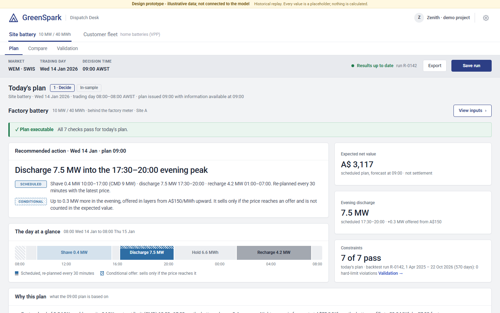
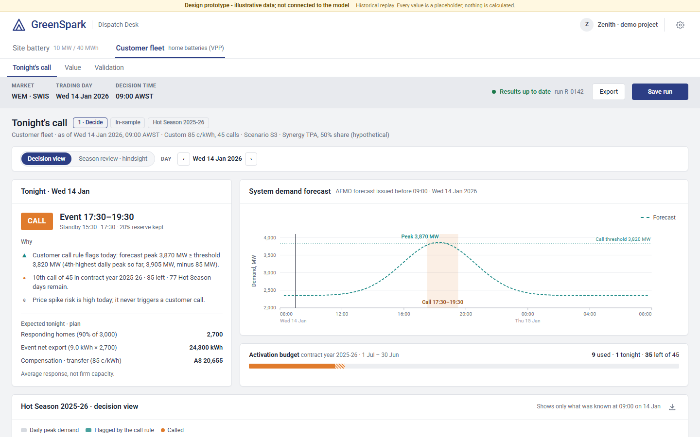